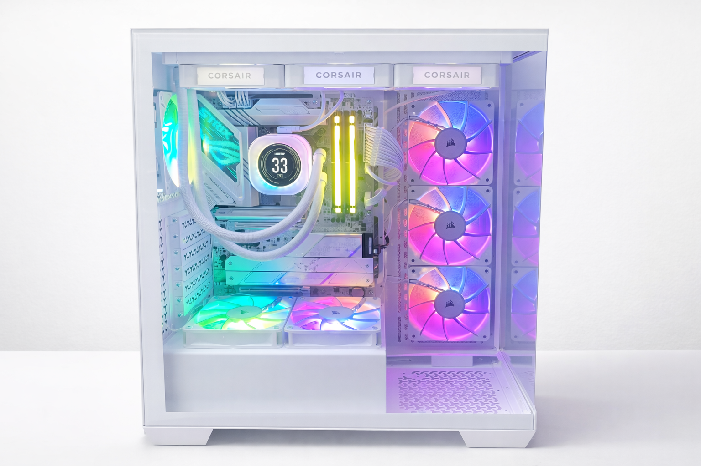
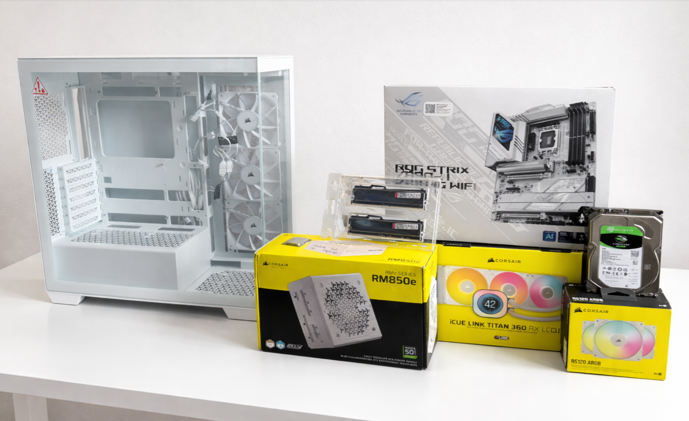
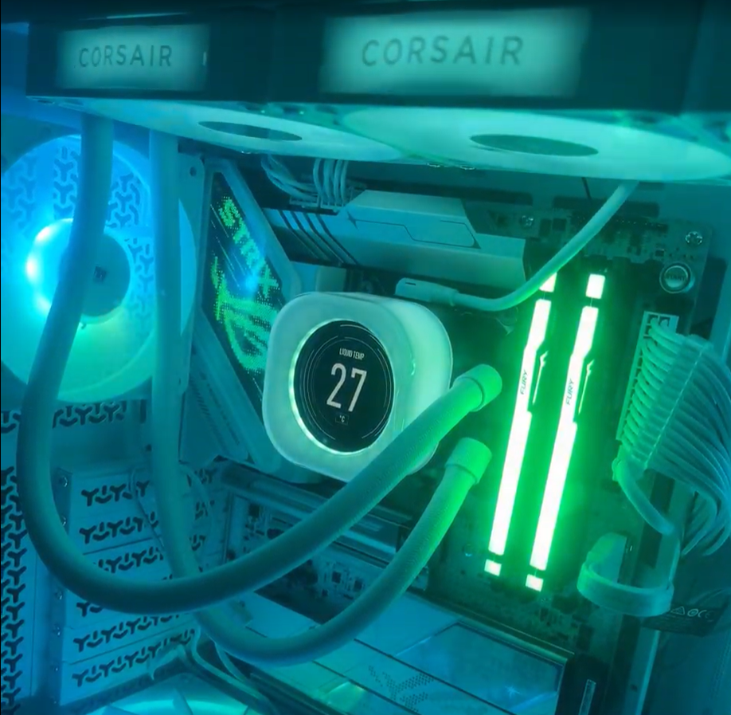
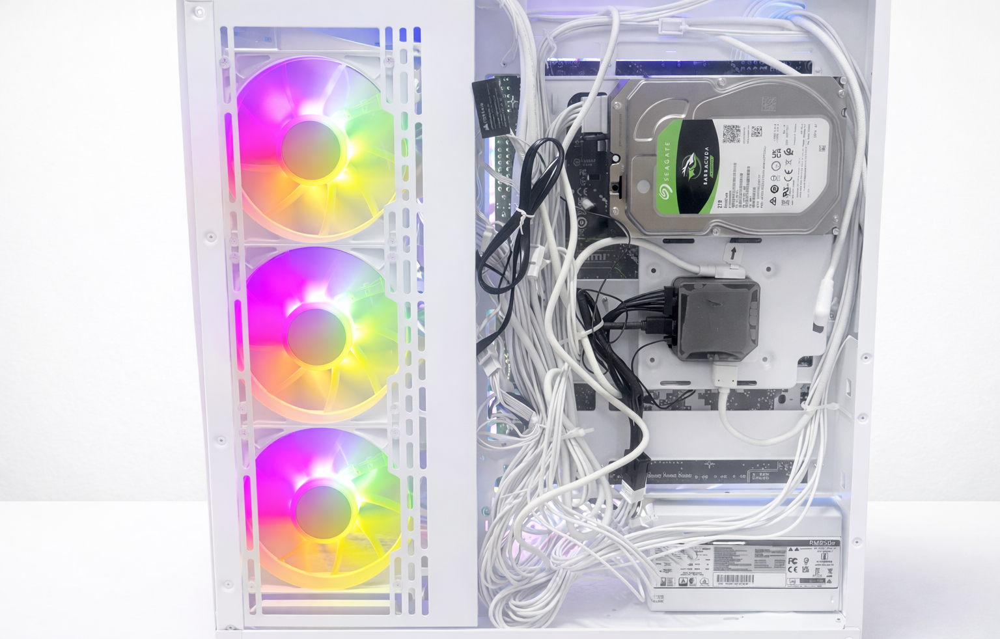
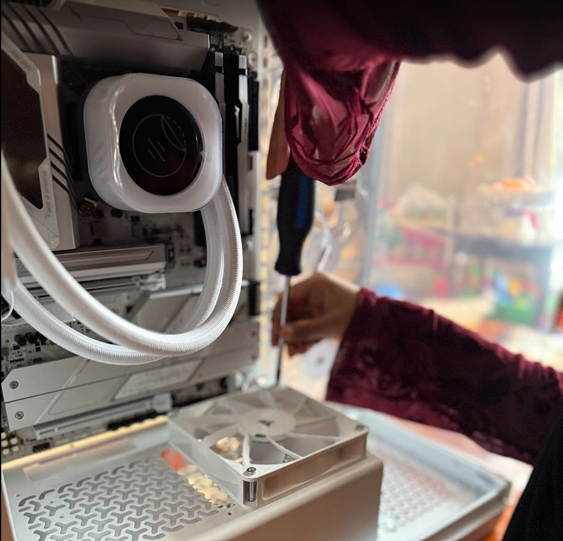

PERSONAL BUILD
Custom PC Build
A personal desktop build focused on performance, cooling, clean component selection, and a polished visual setup. This build combined modern hardware choices with practical assembly, cable management, and thermal planning.
Project snapshot
This project involved planning and assembling a custom PC around a high-performance Intel processor, a Corsair iCUE LINK TITAN 360 RX LCD liquid cooler, mixed SSD and hard drive storage, and a Corsair 3500X case. Beyond the build itself, it reflects an interest in hardware selection, system layout, airflow, and creating a machine that balances power, cooling, and aesthetics.

Focus
Custom desktop assembly with strong performance, cooling, and clean internal layout.
CPU
Built around an Intel Core i9 285K for high-end processing power.
Cooling
Corsair iCUE LINK TITAN 360 RX LCD liquid CPU cooler for thermal control and visual appeal.
Outcome
A clean and powerful personal PC build designed for performance and presentation.
What this build was about
This was a personal custom PC build that brought together hardware focused on performance and a clean modern case layout. I wanted to create a system that felt strong in both function and presentation, with attention to cooling, storage balance, and overall component fit. I am also planning to upgrade the system with an NVIDIA 5070 GPU to further enhance graphics performance and overall system capability.
The build process involved choosing compatible parts, thinking through airflow and case space, and assembling the system in a way that kept the interior organized and visually polished. It was also a chance to build practical confidence with real desktop hardware. Power delivery was supported by a Corsair RM850e power supply, ensuring stable performance and headroom for future GPU upgrades.
What I worked on
I planned and assembled the system, selected the core hardware, and put together a build that balanced performance, storage, cooling, and appearance. This included thinking through how all the parts would fit and work together physically inside the case.
- Selected the main performance components
- Built around an Intel Core i9 285K processor
- Integrated liquid cooling for CPU temperature control
- Configured both SSD and hard drive storage
- Worked within the Corsair 3500X case for layout and presentation
- Focused on clean assembly and an organized final build
Why this project is worth showing
Even though this was a personal build, it still reflects problem solving, technical planning, and hands-on execution. It shows interest beyond coursework and highlights comfort with hardware, system organization, and decision making.
It also represents a different side of technical work which is assembling a system and making design choices that affect usability, performance, and visual finish.
Main build specifications
How the build came together
1. Component Acquirement
The build started with selecting major components that would work together well in terms of performance, cooling requirements, and case compatibility.
2. Performance and storage balance
I combined a fast Samsung 980 SSD for primary storage with a larger Seagate hard drive for additional capacity, creating a setup that balanced speed and space.
3. Cooling setup
A major part of the build was integrating the Corsair iCUE LINK TITAN 360 RX LCD liquid CPU cooler, which added both thermal performance and a strong visual centerpiece.
4. Physical assembly
The system was assembled inside the Corsair 3500X case, with attention to part placement, internal organization, and creating a clean-looking build.
5. Final system presentation
Once assembled, the final build reflected both hardware performance and a polished visual setup, showing the value of thoughtful layout and component choice.
Hardware planning
This build required thinking through compatibility, layout, and how each part contributed to the final system.
Cooling focus
The liquid cooler was a major part of the build, both functionally for thermal control and visually as a standout feature.
Hands-on execution
It reflects practical experience with real hardware assembly rather than only software or theory.
Performance-oriented hardware
The Intel Core i9 285K and 32GB of RAM gave this build a strong performance foundation. Combined with the Samsung 980 SSD, the system was designed to feel responsive and capable for demanding workloads.
Choosing these components was not just about raw specs, but about building a machine that felt fast, modern, and well-rounded overall.
Cooling and internal layout
The Corsair iCUE LINK TITAN 360 RX LCD liquid CPU cooler played an important role in both appearance and function. It helped make cooling a visible part of the build rather than an afterthought, while the Corsair 3500X case supported a clean and display-friendly layout.
Gallery

Components

Cooling detail

Assembly and cable management
